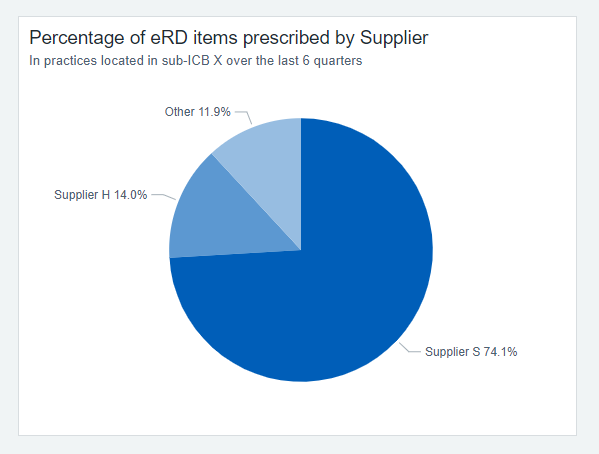
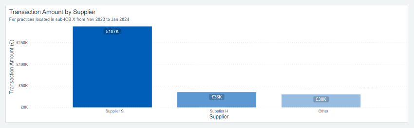

Colour guidance
REVIEWNHS colour palette
This guidance uses the NHS Colour palette as a basis for data visualisation colour requirements within the NHS Business Services Authority (NHSBSA).
It has been created to help standardise our products in line with best practice, for internal and external users, ensuring:
- consistency
- brand reputation
- familiarity with our dashboards
This makes it easier for users to understand and gain valuable insights from our data visualisation products.
For more information read the internal NHSBSA branding site.
Accessibility of colours
To make sure our charts are accessible to all users, colours must be used with enough contrast, sparsely and purposefully. You can find out more about success criteria for colours in charts on the Civil Service data visualisation colours page.
Contrast ratios should be checked to help with conditions such as low vision and colour blindness. It’s important to keep a 3 to 1 contrast ratio between adjacent colours (as set out in [WCAG accessibility success criterion 1.4.11][https://www.w3.org/TR/WCAG22/#non-text-contrast]) for people with low vision.
You can find out more about what to consider when using colour in charts on the Civil Service data visualisation colours page.
Things to consider
Try to:
- limit the number of colours – use only the colours needed to improve the user’s understanding
- align colours consistently to the same variables (Example A)
- use colours that have meaningful associations or personalisations - for example, use NHS blue if you’re comparing the NHS to another organisation
- make sure colour contrast is at least 3:1 for graphics and 4.5:1 for text, in line with [Web Content Accessibility Guidelines (WCAG)][https://www.w3.org/TR/WCAG22/#contrast-minimum]
- use the WebAIM colour contrast checker or the Acart contrast checker
- make sure colour is not the only way to access information – provide an alternative way, as required by accessibility [success criterion 1.4.1 (Use of Colour)][https://www.w3.org/TR/WCAG22/#use-of-color]
You can find out more about what to consider when using colour on the Civil Service data visualisation colours page.
Consider the type of chart you’re using and the relevant colour palette. You can refer to the Categorical and Sequential Standards pages for more information:
Colour can be used to connect information. For example, if you’re showing data about various suppliers, individual suppliers should be represented by the same colour across charts. So, if ‘Supplier H’ appears across multiple visualisations, use the same colour for ‘Supplier H’ each time it appears.
You can find out more about how to choose colours for data visualisations at Atlassian.


Focus charts
Focus charts are charts which use colour to highlight specific elements to help users understand the information.
The primary colour NHS Blue should be used to pull focus against NHS Grey 3.
#005EB8 is the hex code for NHS Blue (strong blue):
#AEB7BD is the hex code for NHS Grey 3 (greyish blue):
You can find out more about focus charts colour palette on the Civil Service data visualisation colours page.
You can find out more about colour in the NHS digital service manual.
Text
The primary text colour to use is: #212B32. This should be used across most headers and body of text.
The secondary text colour to use is: #4C6272. This can be used for things such as a search box, or secondary content such as the heading of a links section.
#212B32 is the hex code for very dark (mostly black) blue:
#4C6272 is the hex code for very dark greyish blue:
You can find out more about colour in the NHS digital service manual
Alerts
You can focus the reader’s attention by using a background of NHS Blue (#005EB8) with a bold white text. Otherwise, if the alert is urgent or extremely important, the NHS Pale Yellow (#FFF9C4) background can be used with the primary text colour (#212B32).
#FFF9C4 is the hex code for NHS Pale Yellow (very pale yellow):
#212B32 is the hex code for very dark (mostly black) blue:
Useful links
- Government Analysis Function guidance
- Digital Service Manual, NHS Colours
- NHS Identity Standards
- GOV.UK Design System, Colours
- Tint and Shade Generator
Improve the playbook
If you spot anything factually incorrect with this page or have ideas for improvement, please share your suggestions.
Before you start, you will need a GitHub account. Github is an open forum where we collect feedback.
Published:
Last reviewed:
Next review due: